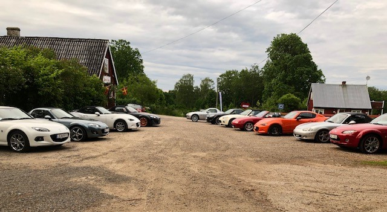

Image Analytics Report
lottapaasen.se
Generated on 2025-07-17 20:19:29
Total Images: 33
| Image | Analysis Score | LLM Score | Sharpness | Blur | Resolution | Aspect Ratio | Brightness | Contrast | Dominant Color | File Size | Actions |
|---|---|---|---|---|---|---|---|---|---|---|---|
|
chocolate_cupcake_with_strawberry.jpg
Jes 1
üìù chocolate_cupcake_with_strawberry.jpg üí¨ Chocolate cupcake topped with whipped cream and a fresh strawberry. Slightly uneven cream, natural lighting, visible cupcake liner. Colors are vivid, composition centered, close-up framing. Image slightly grainy. üéØ Food showcase or menu image. ‚öñÔ∏è The image captures a delicious cupcake, but the focus is a bit soft, and graininess reduces the sharpness. Lighting is natural but uneven. Close-up works but lacks professional sharpness. Vivid colors add appeal. üí≠ craving, warmth, coziness |
7.5 | 5.0 | 103.2 | Partially Blurry | 166x202 | 0.82 | 117 | 61.9 | 21.0% | 0.0 MB | |

outdoor_party_tent_with_balloons.jpg
43
üìù outdoor_party_tent_with_balloons.jpg üí¨ White party tent with pastel balloons, white-covered tables, scattered flowers in vases, and high chairs. Soft daylight, uneven color palette, slightly cluttered table setup. Slight tilt in framing. üéØ Event or party venue setup photo ‚öñÔ∏è Light and airy mood. Decent sharpness, but some overexposure and uneven balloon arrangement. Tables not fully set, some visual clutter from utensils. Natural lighting is pleasant but slightly flat. Event setup in progress, not fully styled. üí≠ anticipation, calm, slight disorganization |
8.0 | 6.0 | 909.2 | Slightly Blurry | 480x640 | 0.75 | 170 | 71.3 | 26.9% | 0.3 MB | |

outdoor_garden_cafe_seating.jpg
Trädgård
üìù outdoor_garden_cafe_seating.jpg üí¨ White wooden tables and chairs scattered on green lawn. Purple tree provides shade. Bright daylight, some shadowing. Background: car, playground, red wooden structure. Slightly cluttered arrangement. üéØ Outdoor cafe or event seating promotion. ‚öñÔ∏è Pleasant outdoor cafe setting, vibrant greens. Some shadow disruption, high contrast. Table placement appears crowded, limiting space. High-resolution, natural colors, not fake. Mildly inviting but visually busy. üí≠ relaxed, inviting, casual |
8.7 | 7.0 | 11114.6 | Clear | 2016x1512 | 1.33 | 103 | 60.3 | 21.3% | 1.3 MB | |

dessert_duo_on_wooden_surface.jpg
üìù dessert_duo_on_wooden_surface.jpg üí¨ Two different desserts on plates: sponge cake with whipped cream and strawberry, chocolate cake slice with cream and strawberry. Warm lighting, overhead view. Dark wood table. Plates don't match. Slightly harsh shadows. üéØ Food presentation/home baking showcase ‚öñÔ∏è Cozy, homemade vibe. Image is clear but lacks professional staging. Lighting is uneven, some shadows. Mismatched plates with visible table texture. Color palette mostly neutral with pops of red and green. Desserts look real and appetizing. Not stylized or staged for commercial use. üí≠ homemade, cozy, inviting |
8.4 | 6.0 | 615.6 | Clear | 640x480 | 1.33 | 124 | 61.7 | 21.1% | 0.1 MB | |

outdoor_party_venue_white_decor.jpg
41
üìù outdoor_party_venue_white_decor.jpg üí¨ Covered outdoor event space with white chairs, long tables with white tablecloths, pastel balloons, hanging plants. Daylight, slightly overexposed. Simple, informal arrangement. Some cushions on chairs. üéØ Event or party documentation. ‚öñÔ∏è Event setting, organized but basic decor, washed out lighting due to overexposure, balloons, plants add festivity. Casual, slightly cluttered composition, lacks focus. Photo is clear but not striking. Lighting could be more balanced. No photo manipulation visible. üí≠ welcoming, festive, casual |
8.7 | 6.0 | 1571.7 | Clear | 480x640 | 0.75 | 147 | 67.8 | 19.6% | 0.3 MB | |
|
cake_and_candlelit_corner.jpg
fika
üìù cake_and_candlelit_corner.jpg üí¨ A cake with icing and yellow pieces, chocolate balls with coconut, glass candle holders, doilies, candy bowls. Warm lighting, intricate wallpaper. Shadows, slight clutter. üéØ Home dessert presentation ‚öñÔ∏è The image has a cozy and inviting feel due to the warm lighting, homey wallpaper, and candlelight. However, the lighting creates some harsh shadows and there's minor clutter. Moderate sharpness, slightly uneven arrangement. üí≠ cozy, warmth, nostalgia, homeliness |
8.3 | 6.0 | 2115.6 | Slightly Blurry | 646x484 | 1.33 | 138 | 58.2 | 23.7% | 0.1 MB | |

motorcycle_group_roadside.jpg
MC 3
üìù motorcycle_group_roadside.jpg üí¨ Five motorcyclists with helmets on a gravel road, trees and red house in background. Moderate sunlight, harsh shadows, slightly uneven composition. Colors mostly neutral with spots of blue and red. üéØ Event documentation ‚öñÔ∏è Casual, informal roadside gathering. Image feels lively but lacks focus. Lighting is natural but harsh with strong shadows. Average resolution, slightly cluttered background. Faces obscured by helmets. No fake appearance. üí≠ adventure, freedom, casual |
8.7 | 5.0 | 1814.4 | Clear | 480x425 | 1.13 | 120 | 63.6 | 16.4% | 0.3 MB | |

lotta_pa_asen_map.jpg
üìù lotta_pa_asen_map.jpg üí¨ Simplified map to Lotta p√• √Ösen, address and GPS, heart icons, black lines for roads, sparse color, clear label box left, minimal context outside marked area. üéØ Location/direction for a business or event. ‚öñÔ∏è Functional map, clear for purpose, minimalistic style. Resolution is adequate, but colors are basic and lightning is absent due to illustration format. Could benefit from more environmental features and clearer road labels. Not visually engaging, but precise for navigation; feels neutral and utilitarian. üí≠ neutral, instructive |
4.8 | 6.0 | 5674.3 | Partially Blurry | 1240x874 | 1.42 | 249 | 30.6 | 94.4% | 0.1 MB | |

outdoor_cafe_garden_white_furniture.jpg
Trädgård
üìù outdoor_cafe_garden_white_furniture.jpg üí¨ Outdoor garden caf√© with white wooden tables and chairs, red wood buildings in background, lush greenery, blue sky, some uneven shadow, slight lack of contrast. üéØ Outdoor caf√© promotion or atmosphere showcase ‚öñÔ∏è Inviting and peaceful atmosphere, fair sharpness, natural daylight. Shadows on left create uneven lighting. Composition is balanced but could use more color contrast. Image captures the caf√©'s charm but could benefit from vibrancy boost. üí≠ calm, inviting, peaceful |
8.7 | 7.0 | 2576.7 | Clear | 640x480 | 1.33 | 107 | 66.5 | 14.9% | 0.1 MB | |

red_cottage_with_white_garden_furniture.jpg
Trädgård och cafébyggnad
üìù red_cottage_with_white_garden_furniture.jpg üí¨ Red wooden house with black metal roof. Several white wooden tables and chairs set on green lawn. Tree branches at top with partial leaves. Bright daylight, slight overexposure in clouds. üéØ Caf√©/restaurant outdoor seating promo ‚öñÔ∏è Bright, cheerful outdoor scene with attractive red house, well-placed white furniture. Photo slightly overexposed in sky, moderate sharpness, some distractions from leaves. Inviting but lacks strong focal point, slightly flat colors. Not fake. üí≠ peaceful, inviting, relaxed |
8.3 | 7.0 | 2784.4 | Clear | 442x640 | 0.69 | 118 | 49.9 | 21.2% | 0.3 MB | |
|
plate_of_cupcake_like_pastries.jpg
småkakor 1___serialized1
üìù plate_of_cupcake_like_pastries.jpg üí¨ Seven small round pastries in colorful plaid paper cups on a plate, each with a brown spot in the center. Lighting is warm but image is blurry, lacks sharpness. üéØ Food product display ‚öñÔ∏è Blurry image, lacks sharpness and detail. Warm but uneven lighting. Arrangement of pastries is appealing, but low resolution affects product clarity. Colors are muted due to lighting. Not fake, just poorly captured. üí≠ homey, warm, festive |
5.8 | 3.0 | 65.3 | Very Blurry | 186x166 | 1.12 | 123 | 60.5 | 15.4% | 0.0 MB | |
|
dessert_buffet_display.jpg
üìù dessert_buffet_display.jpg üí¨ Buffet with five desserts on a wooden counter, plates on the wall, plants, two lit lamps, moderate lighting. Dessert variety but image slightly dim, lacking sharpness. üéØ Dessert buffet presentation ‚öñÔ∏è Image feels homey and inviting, moderate resolution, cozy arrangement. Lighting could be improved, as it's slightly dim. Milder colors, some shadows. Dessert presentation is appealing but slightly cluttered. Not fake, clearly a real scene. üí≠ cozy, inviting, nostalgic, warm |
8.3 | 6.0 | 2704.5 | Clear | 1613x1210 | 1.33 | 137 | 48.8 | 28.0% | 0.6 MB | |
|
outdoor_event_table_setting.jpg
45
üìù outdoor_event_table_setting.jpg üí¨ Tables with white cloths, peach napkins, and glassware under a tent. White chairs, simple vase flowers, balloons, gifts in background. Soft, natural light, some shadows, slightly dull colors. üéØ Event/party setting documentation ‚öñÔ∏è Image has inviting feel, arranged for a celebration, but overall lighting is flat and colors lack vibrancy. Table arrangement is clear but background feels cluttered. Not professionally lit, looks casual and slightly underexposed. No fake elements apparent. üí≠ warmth, casualness, anticipation |
8.7 | 6.0 | 705.6 | Slightly Blurry | 480x640 | 0.75 | 152 | 78.5 | 29.0% | 0.2 MB | |
|
cyclists_group_meal_rustic_setting.jpg
51
üìù cyclists_group_meal_rustic_setting.jpg üí¨ Group of cyclists in matching jerseys seated around a red-checkered table eating. Indoor rustic space, stone wall and wooden beams, uneven lighting, casual atmosphere. Details visible. üéØ Documenting a team or group meal. ‚öñÔ∏è Photo captures camaraderie and activity. Lighting is uneven, some parts overexposed. Image quality is good, colors are natural. Background busy but suits environment. Faces slightly blurred but identifiable. Feels informal and social. Not staged or fake. üí≠ camaraderie, relaxation, friendship, informality |
9.0 | 7.0 | 2274.1 | Clear | 480x640 | 0.75 | 116 | 74.1 | 22.0% | 0.3 MB | |

outdoor_garden_seating_with_white_flowers.jpg
Trädgård
üìù outdoor_garden_seating_with_white_flowers.jpg üí¨ Blue and white wooden chairs, round tables on stone patio, lush greenery, white flowers in foreground. Natural light. Slight blur on foreground flowers, background in focus. Image not fake. üéØ Caf√© terrace promotion or outdoor dining feature. ‚öñÔ∏è Inviting outdoor garden seating area. Good natural lighting and color balance. Foreground flowers slightly blurred, which distracts. Background moderately sharp, well-composed with a pleasant atmosphere. High resolution, image looks real. Could improve focus on flowers. üí≠ calm, relaxed, inviting |
8.6 | 7.0 | 8008.9 | Clear | 1602x1512 | 1.06 | 118 | 54.4 | 15.5% | 2.9 MB | |

shrimp_salad_outdoor_lunch.jpg
55___serialized1
üìù shrimp_salad_outdoor_lunch.jpg üí¨ Plate of shrimp salad with lemon, cucumber, tomato. Blue-gray mug behind. Pink checkered tablecloth, napkin, fork. Strong sunlight causing harsh shadows. Colors natural, slightly overexposed highlights. üéØ food presentation ‚öñÔ∏è Outdoor dining feel. Image slightly overexposed, harsh sunlight causes strong shadows and blown highlights. Food arranged clearly. Composition typical, background cluttered with cup and utensils. Not fake, but lacks polish. üí≠ hunger, casual, summer |
6.7 | 5.0 | 76.2 | Very Blurry | 153x168 | 0.91 | 149 | 53.6 | 25.7% | 0.0 MB | |

assorted_homemade_pastries_display.jpg
fika
üìù assorted_homemade_pastries_display.jpg üí¨ Various homemade pastries: chocolate tarts, coconut balls, powdered cake squares, and oat bars on plates. Blue cup with flowers in background. Natural lighting, slight shadows. üéØ food presentation/display ‚öñÔ∏è Composition is well-organized and inviting. Lighting is natural but casts some uneven shadows. Resolution is decent. Focus is sharp on pastries, but background (flowers) not fully aligned. Color pops in flowers and pastries. Real, casual home setting. Slight tilt to view. No fake elements. üí≠ warmth, homeliness, comfort, invitation |
8.5 | 7.0 | 2334.3 | Slightly Blurry | 640x480 | 1.33 | 127 | 63.4 | 19.2% | 0.1 MB | |
|

sports_car_meetup_rural_area.jpg
14
üìù sports_car_meetup_rural_area.jpg üí¨ Cluster of sports cars parked on coarse gravel lot. Two rustic buildings, greenery, overcast sky. Colors include white, silver, red, orange. Lighting flat, details are clear but slightly dull. No people visible. üéØ automobile event documentation ‚öñÔ∏è Image instills communal, casual car enthusiast vibe. Moderate quality and resolution, composition is wide with central empty space, could be more tightly framed. Colorful cars contrast greenery, sky dull. Sharpness is decent, looks realistic. üí≠ casual, community, enthusiasm, outdoorsy |
8.8 | 6.0 | 2123.4 | Clear | 640x351 | 1.82 | 138 | 69.5 | 20.2% | 0.2 MB | |

Lotta_pa_Asey_housefront.jpg
üìù Lotta_pa_Asey_housefront.jpg üí¨ Front of a house with flowers and sign 'Lotta p√• √Ösen.' Main subject clear, surroundings blurred. Monochrome palette, moderate lighting. Windows and floral arrangements visible. üéØ Tourism or location identification ‚öñÔ∏è Focus on the sign and house is adequate, but peripheral heavy blur impacts detail and context. Moderate lighting lacks vibrancy. Composition centered on text. Resolution appears average. No visible digital artifacts. Not fake, but lacks clarity. üí≠ nostalgia, calm, curiosity |
6.7 | 4.0 | 962.5 | Very Blurry | 640x451 | 1.42 | 146 | 55.7 | 18.1% | 0.1 MB | |

outdoor_event_dining_area.jpg
44
üìù outdoor_event_dining_area.jpg üí¨ White tables and chairs under a canopy, set on brick patio. Neutral palette, overcast daylight, minimal decoration, visible barn structure. Lighting flat, lacks color vibrancy, some cluttered arrangements. üéØ event dining documentation ‚öñÔ∏è Neutral, serene setup, but lacks strong visual impact. Overcast lighting makes scene flat, white color dominates, minimal decoration reduces warmth. Good clarity but no focal point. Suitable for casual event documentation. üí≠ calm, neutral, orderly |
8.8 | 6.0 | 928.8 | Slightly Blurry | 480x460 | 1.04 | 143 | 76.6 | 28.2% | 0.2 MB | |

outdoor_string_light_party_setting.jpg
vindskyddet kväll
üìù outdoor_string_light_party_setting.jpg üí¨ Covered outdoor seating area, string lights, dim lighting, tables with chairs, centerpiece with flowers and pumpkins. Slightly dark. Warm orange-brown tones. üéØ Event or party setting documentation ‚öñÔ∏è Dimly lit, which creates a cozy mood, but details are hard to see. The composition is symmetrical with a pleasing arrangement, but image resolution is mediocre. Lights add warmth; overall environment feels inviting but lacks sharpness and clarity. üí≠ cozy, warm, inviting |
6.4 | 4.0 | 344.3 | Partially Blurry | 480x367 | 1.31 | 34 | 34.7 | 38.3% | 0.2 MB | |
|
outdoor_cafe_patio_red_cabin.jpg
vindskyddet
üìù outdoor_cafe_patio_red_cabin.jpg üí¨ Outdoor seating area with white wooden tables and chairs, red wooden shed in background, hanging flowerpots, green lawn, and trees. Lighting is natural, partly cloudy. No people present. üéØ Caf√© patio promotion, venue showcase. ‚öñÔ∏è Pleasant, inviting setting, good composition, natural light. Image is sharp, colors true. Slight overexposure on white furniture reduces contrast. No visible imperfections. Balanced, cozy atmosphere for outdoor dining. Image does not look fake. üí≠ calm, inviting, relaxed |
8.8 | 8.0 | 2233.7 | Clear | 640x480 | 1.33 | 111 | 65.3 | 17.6% | 0.1 MB | |

cyclists_group_meal_indoor.jpg
50
üìù cyclists_group_meal_indoor.jpg üí¨ Group of cyclists sitting around a long table with red checked tablecloth, eating and drinking indoors. Bright natural lighting, predominantly black and blue cycling jerseys, some cluttered frame. Image slightly overexposed. üéØ Group event documentation/social media post ‚öñÔ∏è Casual meal gathering with friendly, festive feel. Image is bright with good mood, but unnatural highlights and overexposure. Composition is crowded, some faces partially blocked, clutter reduces focus. Natural, not fake. üí≠ camaraderie, joy, relaxation |
9.1 | 6.0 | 2458.5 | Clear | 480x640 | 0.75 | 135 | 77.9 | 27.7% | 0.4 MB | |
|
restteamet_tour_bus_outdoors.jpg
47
üìù restteamet_tour_bus_outdoors.jpg üí¨ Large white coach bus labeled 'ResTeamet' parked on gravel near trees and a house. Bright daylight, sky with clouds. Side and front of bus visible. Natural scenery. üéØ Travel company product/service image ‚öñÔ∏è The image has good resolution and composition, clear view of bus, and natural daylight. Trees and house provide context, minimal distractions. Slight shadow and reflection on windshield, otherwise sharp. Lighting is natural, not harsh. Overall, professional travel or transportation feel. üí≠ professional, calm, summery, organized |
8.4 | 8.0 | 1007.9 | Slightly Blurry | 449x573 | 0.78 | 140 | 61.5 | 23.3% | 0.2 MB | |
|
strawberry_cakes_on_white_table.jpg
20
üìù strawberry_cakes_on_white_table.jpg üí¨ Two strawberry cakes with whipped cream on a white outdoor table. Vase of blue and white wildflowers. Red wooden houses in background. Overcast lighting, slightly uneven focus. üéØ Food presentation image ‚öñÔ∏è Calm, summery vibe. Outdoor setting. Cakes are inviting. Image quality is good, but focus is somewhat soft and lighting is flat. Composition is pleasant, background is busy but not distracting. Not fake, but could benefit from sharper detail and better lighting contrast. üí≠ calm, inviting, summer, cozy |
8.9 | 7.0 | 1419.1 | Slightly Blurry | 480x640 | 0.75 | 149 | 76.5 | 29.9% | 0.3 MB | |
|
cyclists_group_meal_stone_cabin.jpg
49
üìù cyclists_group_meal_stone_cabin.jpg üí¨ Large group of cyclists in matching jerseys eating at a long table with red checkered cloth. Cabin with stone walls, white wooden beams. Daylight, mixed lighting. Cluttered composition. üéØ Group event documentation ‚öñÔ∏è Image captures a cheerful social moment. Resolution decent but lighting uneven. Some areas overexposed, messiness on table. Faces slightly obscured, tight framing. Composition crowded, not visually balanced. üí≠ camaraderie, friendship, team spirit |
9.2 | 6.0 | 3186.1 | Clear | 480x640 | 0.75 | 122 | 82.4 | 25.4% | 0.4 MB | |

cyclists_shared_meal_stone_room.jpg
52
üìù cyclists_shared_meal_stone_room.jpg üí¨ A group of cyclists in team jerseys dining at a long table with red-checked tablecloth in a rustic room. Natural lighting, slightly overexposed window, good overall sharpness, cluttered composition. üéØ Event/documentation photo ‚öñÔ∏è The image has a communal, energetic feel due to the group activity and setting. Bright natural light but slightly overexposed around the window. Image is sharp, details are clear. Composition is busy, making it less balanced visually. Colors are natural. The scene looks authentic, not fake. üí≠ camaraderie, motivation, energy, focus |
9.1 | 7.0 | 3134.7 | Clear | 480x640 | 0.75 | 118 | 80.1 | 29.1% | 0.4 MB | |
|
parked_tour_bus_on_gravel_path.jpg
48
üìù parked_tour_bus_on_gravel_path.jpg üí¨ Large tour bus parked on gravel path, side door open, partial reflection of trees. Bright daylight, clear sky. Image tilted, slightly cut-off framing. Minor glare on bus windows. üéØ transportation context photo ‚öñÔ∏è Standard tour bus photo in natural light. Image slightly tilted, open door adds casual feel. Colors clear but some glare/reflections on windows. Framing cuts off front of bus. No obvious digital manipulation. üí≠ casual, travel, anticipation |
8.6 | 6.0 | 1054.4 | Slightly Blurry | 480x640 | 0.75 | 136 | 66.3 | 18.0% | 0.2 MB | |
|
row_of_sports_cars_parking_lot.jpg
16
üìù row_of_sports_cars_parking_lot.jpg üí¨ Row of similar two-seater convertible sports cars in outdoor gravel lot, mostly red and white, forest background, overcast lighting. Framing wide, details on distant cars lacking sharpness. üéØ Car gathering documentation ‚öñÔ∏è Image has a sense of car gathering or club meet, neutral mood. Resolution adequate but distant cars lack clarity. Composition straightforward, horizontal alignment. Colors mostly neutral, subdued light. Background and foreground merge slightly, could use improved focus and contrast. Image is genuine, not fake. üí≠ neutral, enthusiastic, calm |
8.9 | 6.0 | 1923.0 | Clear | 640x337 | 1.90 | 115 | 71.4 | 20.9% | 0.2 MB | |

rustic_dining_area_with_red_checked_tablecloths.jpg
Backstugan
üìù rustic_dining_area_with_red_checked_tablecloths.jpg üí¨ Long tables with red checkered tablecloths, assorted chairs, stone walls, wood roof, natural light, uneven lighting, minimal d√©cor, clean but slightly cluttered arrangement. Some glare on windows. üéØ restaurant or event dining area ‚öñÔ∏è Inviting rustic atmosphere, decent resolution, clean setup, but uneven lighting and slightly cluttered appearance reduce clarity. Strong sense of place, but not highly polished. Some glare on right window reduces visual quality. üí≠ rustic, inviting, casual, homey |
8.6 | 6.0 | 1711.2 | Clear | 640x480 | 1.33 | 119 | 58.2 | 16.5% | 0.1 MB | |

vintage_cafe_dining_room.jpg
café
üìù vintage_cafe_dining_room.jpg üí¨ Wooden tables and chairs, set for tea. Natural daylight from two windows. Soft, warm color palette. Visible ceiling beams. Modest wall decor. Slightly overexposed windows, some uneven table arrangements. üéØ cafe dining room ambiance showcase ‚öñÔ∏è Inviting, cozy atmosphere. Medium-quality resolution. Good composition but lacks symmetry. Natural lighting but overexposed at windows. No obvious digital artifacts, genuine feel. Slightly cluttered, informal. Could benefit from more even table spacing. üí≠ coziness, warmth, nostalgia |
8.6 | 7.0 | 1899.3 | Clear | 640x480 | 1.33 | 121 | 65.0 | 17.0% | 0.3 MB | |
|
lotta_pa_asen_cafe_outside.jpeg
Marika och Amelia
üìù lotta_pa_asen_cafe_outside.jpeg üí¨ Two women in aprons stand outside a red wooden building with white trim, sign above reads 'Lotta p√• √Ösen'. Bright outdoor light, green plants, shadows present, slightly harsh lighting. üéØ Caf√© staff photo ‚öñÔ∏è Warm, welcoming atmosphere, decent composition. Strong sunlight causes some harsh shadows and overexposure on skin. Background context clear. Resolution is good, focus is sharp. Image does not look fake. Faces visible, natural setting. üí≠ welcoming, bright, cheerful |
8.6 | 7.0 | 9713.7 | Clear | 4032x3024 | 1.33 | 112 | 58.0 | 17.5% | 4.0 MB | |
|
Lotta_pa_Asen_logo.png
üìù Lotta_pa_Asen_logo.png üí¨ Red text with two typographic styles on white. Upper text uses Gothic font, lower uses cursive. Clean and centered. üéØ Logo/title graphic ‚öñÔ∏è Image is clear, colors are clean with no distractions. Centered text, good contrast. Simple logo-style composition. No complex elements. Slight sharpness loss in cursive text. No faces. üí≠ tradition, heritage, formality |
5.2 | 8.0 | 1028.7 | Slightly Blurry | 537x188 | 2.86 | 239 | 49.7 | 89.6% | 0.0 MB |